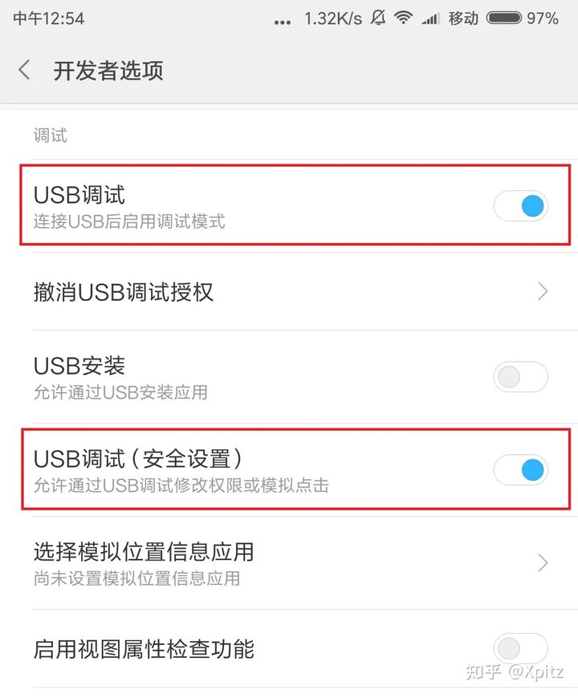
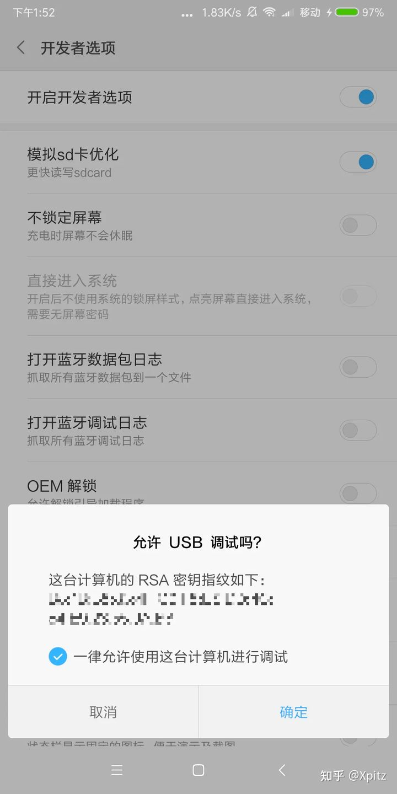
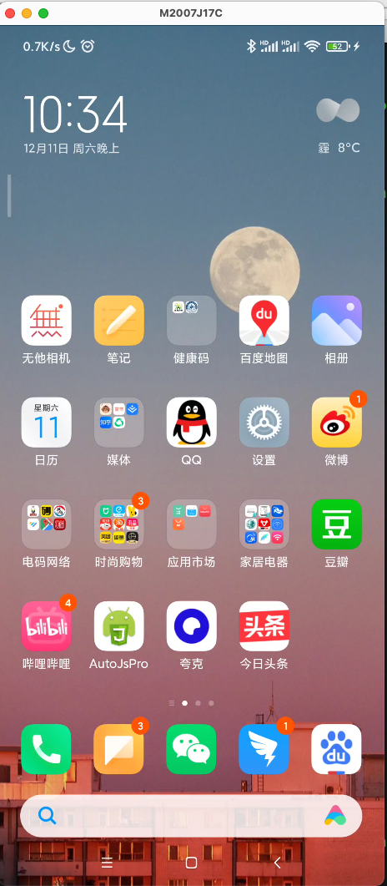
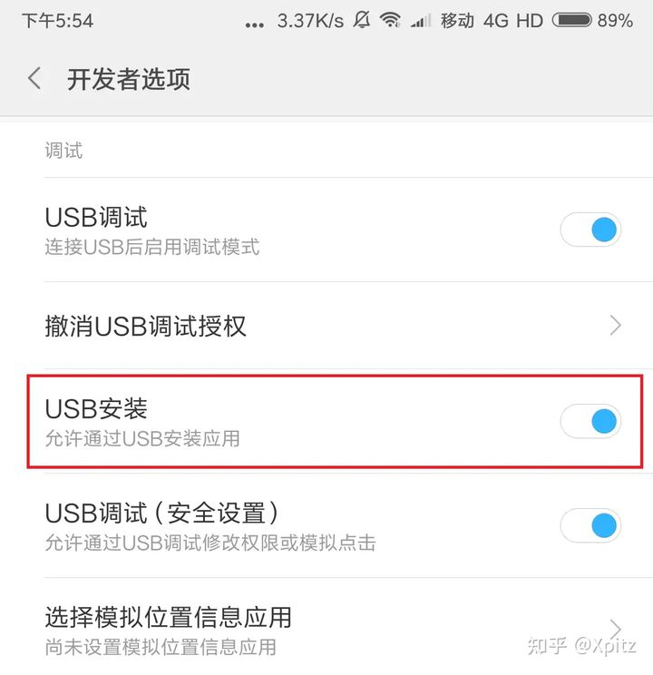
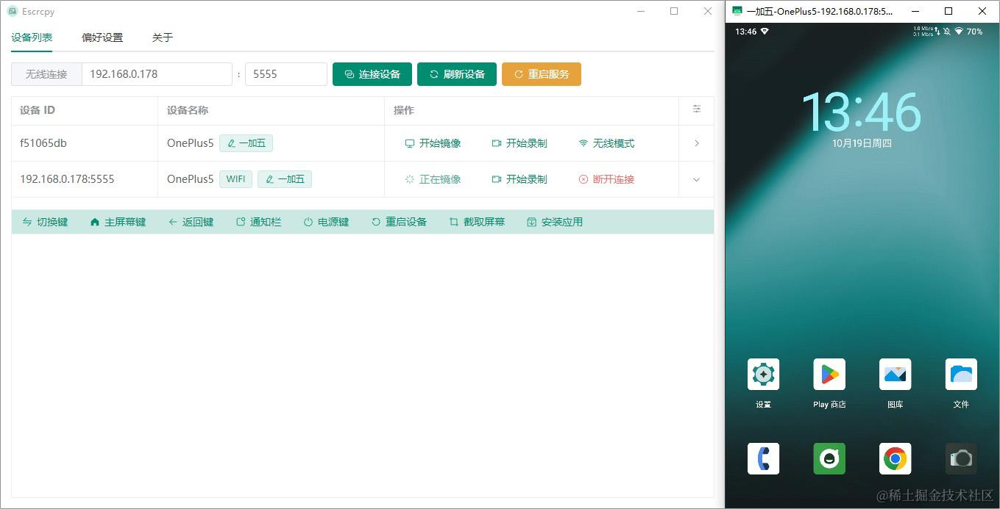

scrcpy 是一款开源的安卓设备投屏控制工具，只需要在PC端安装该软件，通过 USB 或 Wi-Fi 与安卓设备连接后就可以在 PC 端显示和控制安卓设备，无需 root 权限且支持在多平台Linux、Windows 和 MacOS 上运行。接下来介绍该软件的安装和使用。
1、非侵入形式，安卓设备上不需要安装任何软件，只需要在pc端安装软件即可
2、不需要账号、无广告、无需网络
3、可双向复制粘贴
apt install scrcpy到 Releases 下载最新的安装包
https://github.com/Genymobile/scrcpy/releases
brew install scrcpy
# 安装 adb 命令
brew install android-platform-toolsWindows 的安装包里已经集成了 adb 工具，接下来就可以连接设备了。其它平台如果没有集成 adb 的话，则需要安装下。
Scrcpy 使用 adb 与设备通信，adb 可以通过 TCP/IP 或 USB 连接到设备
在连接之前需要启用安卓设备的开发者选项的USB 调试模式

设备通过 USB 连接上 PC 后，可能会弹出授权提示，点击“确定”：

进入 scrcpy 目录，查看 adb 连接的设备：
# windows 设备
D:\tools\scrcpy> adb.exe devices
# linux || mac
adb devices可以看到，安卓设备处于 device 状态，说明连接成功了。
List of devices attached
8968ddf3 device虽然 USB 连接很方便，但是如果需要操作多台安卓设备就比较捉襟见肘了。此时可以将一些设备切换成 Wi-Fi 连接模式
不过需要满足安卓设备与 PC 端处于同一 Wi-Fi 环境中，手机先通过USB与PC相连。
以开放 5555 端口为例，运行如下命令：
adb tcpip 5555查询设备的 IP 后进行连接，设备的 IP 可以在网络设置里获取到：
adb connect 192.168.31.143再检查下当前连接的设备，如果连接无误就可以拔掉 USB 连接线了：
adb devices如果需要切换回 USB 连接，可以运行：
adb usb restarting in USB mode
之后再插入 USB 连接线，设备的状态会从 offline 变为 device。
运行命令 scrcpy 即可启动
scrcpy投屏效果如下：

如果adb设备中列出了多个设备，则必须指定序列号：
scrcpy -s 0123456789abcdef # short version如果设备通过TCP/IP连接:
scrcpy -s 192.168.0.1:5555 # short version您可以为多个设备启动多个scrcpy实例。
scrcpy 的功能还是非常强大的，这里简单说明下。
scrcpy 快捷键操作还是比较丰富的，同样可以通过 --help 进行查询，这里就不列举了。
拖曳 apk 文件到界面里，scrcpy 就会自动安装了。不过安卓设备需要允许 USB 安装应用：

非 apk 文件拖曳后统一传输到 /sdcard/Download/ 下，文件传输情况可以通过 scrcpy 终端日志确认：
2021-12-11 23:05:38.277 scrcpy[47191:7748498] INFO: /Users/wml/Desktop/下载.png successfully pushed to /sdcard/Download/
2021-12-11 23:05:59.865 scrcpy[47191:7745109] INFO: Request to push /Users/wml/Desktop/下载.png
2021-12-11 23:05:59.865 scrcpy[47191:7748498] INFO: Pushing /Users/wml/Desktop/下载.png...
/Users/wml/Desktop/下载.png: 1 file pushed, 0 skipped. 81.7 MB/s (82851 bytes in 0.001s)投屏后可以通过键盘输入文字，可以说很方便了。如果无法输入中文的话，可以把安卓设备上的输入法换成讯飞或者 QQ 输入法。
更多使用说明请参考
https://github.com/Genymobile/scrcpy/blob/master/README.zh-Hans.md
scrcpy 的启动、操作是用命令控制的；有人给其开发了桌面版控制器，使用更加方便

[1] 软件地址: https://github.com/viarotel-org/escrcpy